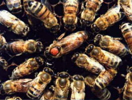
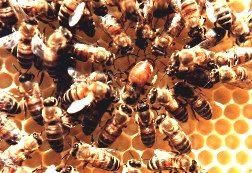

L'ape regina è l'unica femmina feconda dell'alveare. Passa gran parte della sua vita (fino a 5 anni) all'interno, tra i favi, a deporre uova. Esce solo per il volo nuziale, che avviene solo nei primi giorni di vita, durante il quale viene fecondata, anche da più fuchi, e quando decide di sciamare. Esistono tecniche di allevamento delle api regine, che consentono di selezionare la razza e le caratteristiche migliori. Queste api vengono marchiate con colori differenti che indicano l'anno di nascita. All'interno dell'alveare che ha effettuato la sciamatura e che quindi è rimasto orfano, le api allevano, costruendo apposite celle reali, nuove api regine, delle quali però solamente una rimarrà a portare avanti la vita della famiglia.